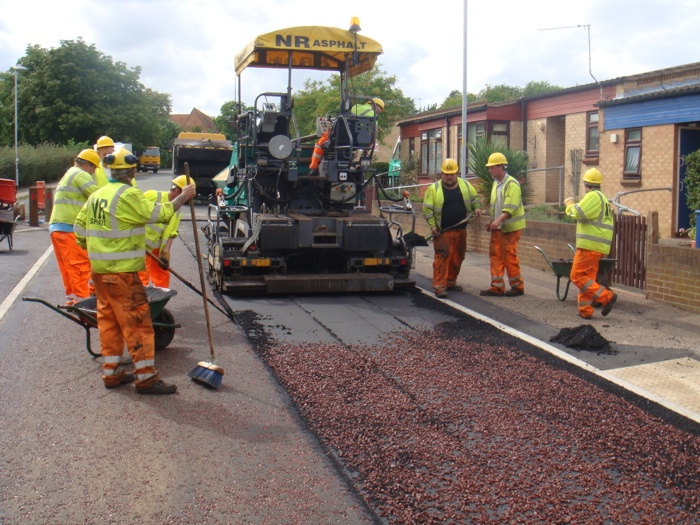

Earthwork is one of the major works involved in road construction. It involves the removal of topsoil, along with any vegetation, before scraping and grading the area to the finished ‘formation level’. This is usually done using a tractor shovel, grader or bulldozer. Below the formation level, the soil is known as the ‘subgrade’. It is essential that the strength of the subgrade is tested prior to earthwork beginning.
Most earthworks are formed by cut-and-fill, and the type of ‘fill’ material must be considered, not only in terms of its physical properties, but on the conditions in which it is to be used, and the methods of compaction.
Depending on its quality, compressible subsoil may be removed or stabilised. If the cost of full or partial excavation of subsoil is uneconomical and would be likely to result in consolidation, sand wicks or sand drains may be used. Sand wicks are sand-filled boreholes beneath the road embankment that give greater stability to the soil by decreasing the length that water has to travel in a drainage path, so dissipating water pressure. Sand drains alongside the road are used to intercept ground water.
Subsoil drainage should be provided to deal with seepage through pavements and verges, from higher ground and a result of the seasonal rise and fall of the water table.
